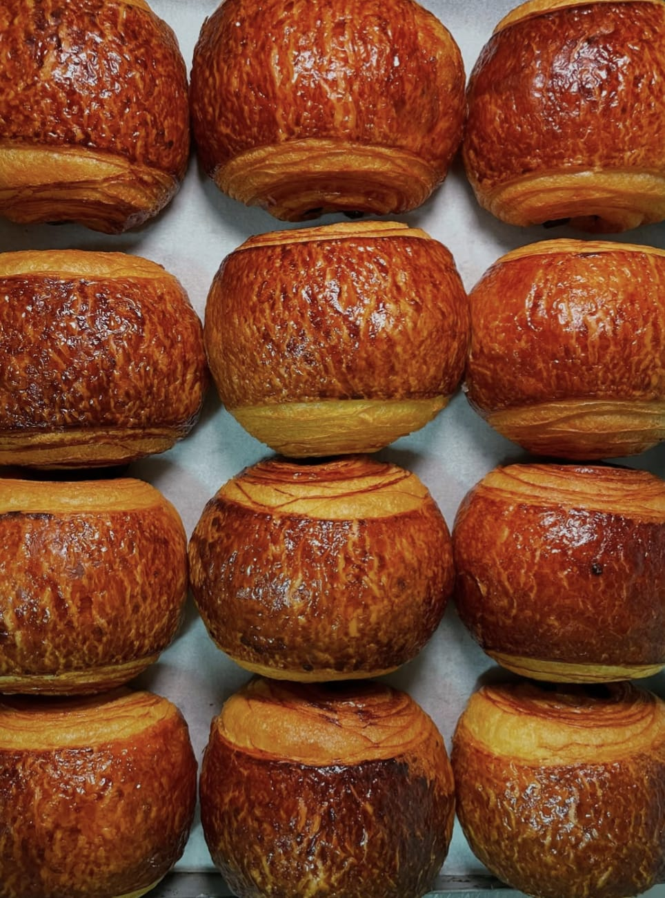

CAFFETTERIA • PASTICCERIA • BISTROT
Indicazioni Stradali
Caffè Rainer
Il nostro storico bistrot nel cuore di Firenze, dove respirare l'atmosfera dei tipici caffè viennesi unita all'eccellenza della pasticceria austriaca e francese.
Orari
Martedì - Sabato: 8:00 - 18:00
Domenica: 8:00 - 15:00
Contatti & Indirizzo
Via San Zanobi 97/R
Tel: 055 493 2207